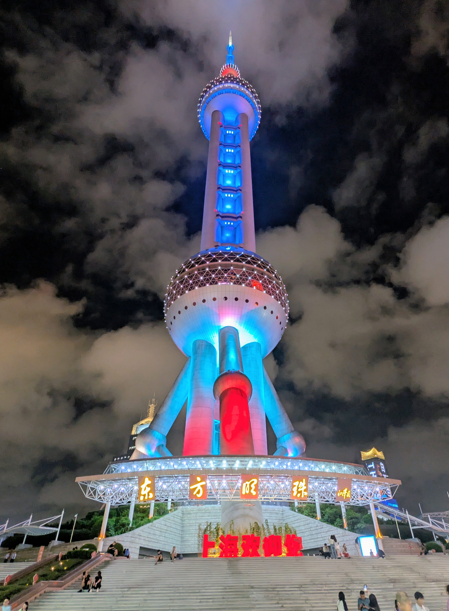

Hello Universe!
My name is Messiah Afzalyar, and I’m a 3rd-year Electrical
Engineering transfer student from Patterson, California.
I am deeply passionate about engineering, traveling, and combat
sports. I’ve had the honor and privilege of traveling all around the
world and have had the opportunity to meet famous fighters like Mike
Tyson and Khabib Nurmagomedov.
I also enjoy music production, reading, and traveling abroad.
My Mission:
- Surround myself with talented & inspring people
- Make a positive impact on the world
- Never stop learning
Recent Travel Destination
My most recent trip was a two-week adventure across China! I visited Beijing, Xi’an, Chengdu, Leshan, Chongqing, and Shanghai (in that order). The blend of ancient culture and cutting-edge modernity made it an unforgettable experience.
Currently Obsessed With

Space aesthetics have been my current obsession. This red nebula reminds me of mystery, power, and a type of unique beauty only found in the unknown. The exploration of the unknown inspires both my tech work and my personal philosophy of eternal wonder.